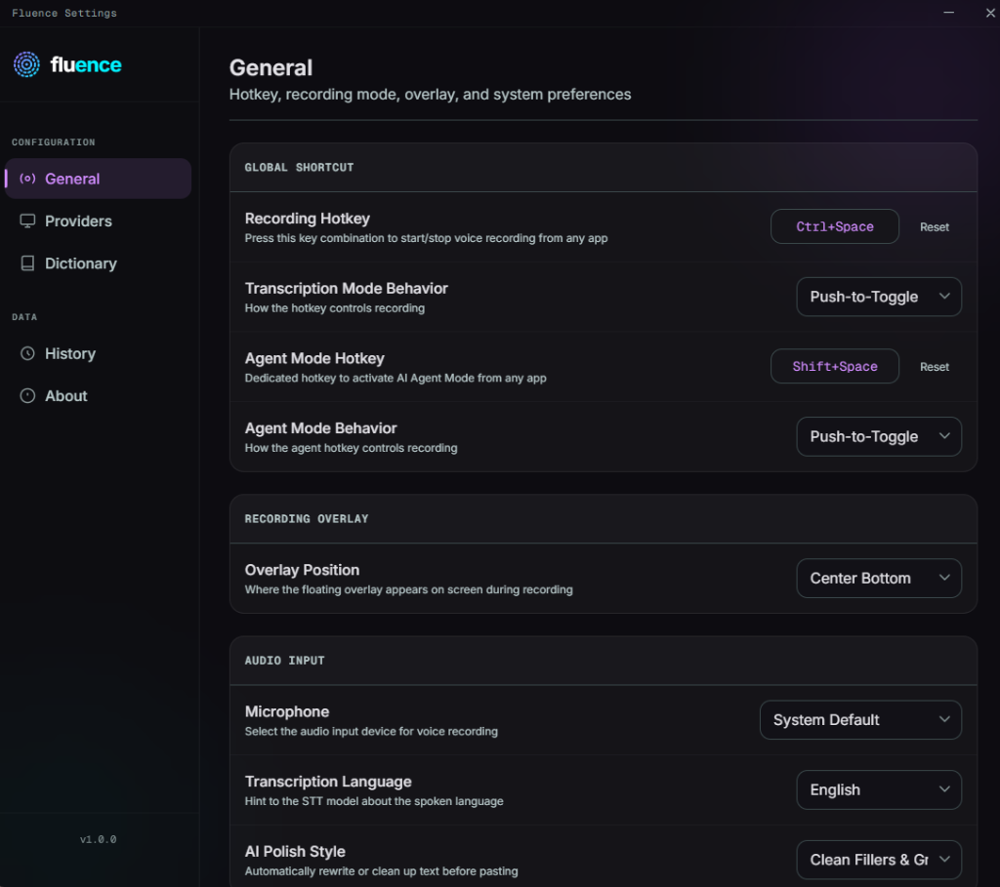
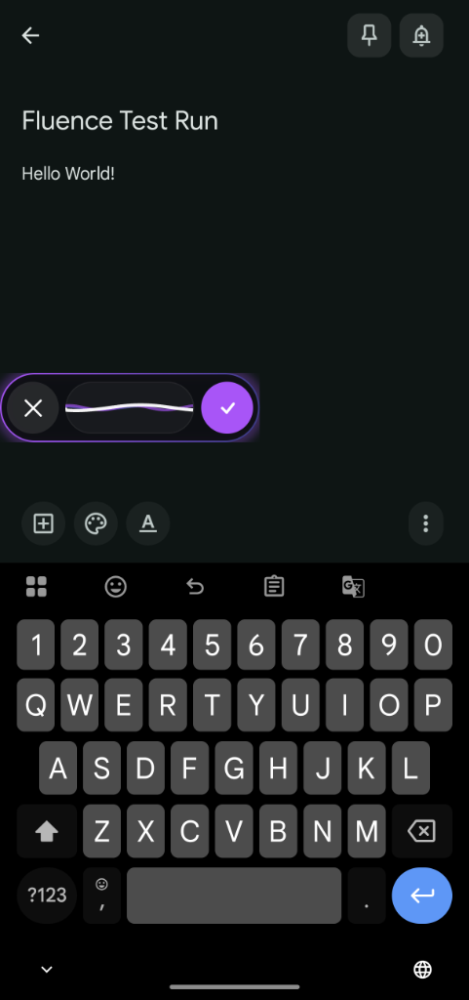
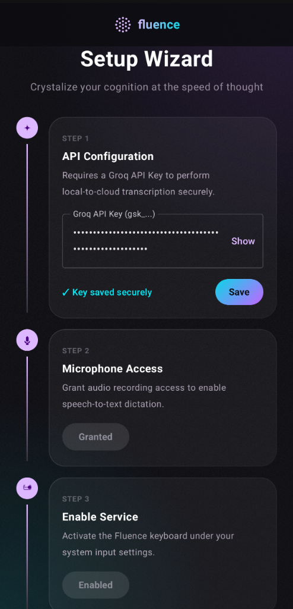

Crystallize your cognition at the speed of thought
Everyone talks faster than they type. That gap is where your thinking gets lost. Fluence closes it - system-wide voice dictation that works inside every app, transcribes in under a second, and keeps your audio off anyone's servers.


Ctrl+Shift+Space
Speak once. Text lands here.You think faster than you type.
The transcription tools that exist either cost $20/month per use case, lock your audio in a closed-source black box, or sacrifice accuracy significantly to run offline. None of them work across Windows and Android.
The Fluence Approach
Fluence uses Groq's Whisper Large v3 for cloud speed and SenseVoice-Small for 100% local accuracy - the first offline model that doesn't trade quality for privacy. Zero telemetry. Hardware-backed key storage. One app for both platforms.
Built around the cursor, not a marketing demo.
Waits for the full thought
Writes into the app you already use
Lets privacy decide the engine
Waits for the full thought
Writes into the app you already use
Lets privacy decide the engine
"The average human speaks 3 to 4 times faster than they type. The idea of paying $20 a month just to use your own voice doesn't sit with me. Fluence exists because the fundamental human advantage of expression of thoughts without any typing bottleneck should belong to everyone without worrying about privacy."Ravi
Every feature is tied to a real interaction.
No floating claims. These are the moments a user actually touches.
Hotkey dictation anywhere
Bind a shortcut once. Trigger recording inside the editor, browser, chat app, or document where your cursor already lives.
Bubble over the keyboard
The mobile control lives beside the real keyboard. Tap to dictate, approve, cancel, or keep typing manually.
Choose the route for your audio
Cloud mode sends audio directly to the model provider. Offline mode keeps inference local after the model is installed.
Explicit permissions and keys
The setup flow names the sensitive parts: API key storage, microphone access, accessibility service, and overlay permission.

Hotkey dictation anywhere
Bind a shortcut once. Trigger recording inside the editor, browser, chat app, or document where your cursor already lives.
Bubble over the keyboard
The mobile control lives beside the real keyboard. Tap to dictate, approve, cancel, or keep typing manually.
Choose the route for your audio
Cloud mode sends audio directly to the model provider. Offline mode keeps inference local after the model is installed.
Explicit permissions and keys
The setup flow names the sensitive parts: API key storage, microphone access, accessibility service, and overlay permission.
Frequently Asked Questions
Is Fluence free to use?
Yes, Fluence is free and open-source under the Apache 2.0 license. Since transcription is processed using API keys, you only pay for your own usage. Groq offers a generous free tier for developers, and even on paid tiers, Whisper transcription costs a fraction of a cent per hour of usage. Offline mode using SenseVoice has no API cost whatsoever.
Does Fluence track my keystrokes or usage?
No, Fluence does not record, store, or transmit keystrokes, typing speed, session length, usage frequency, or any behavioral data. There are no analytics libraries, no crash reporters, and no background telemetry beacons in the codebase. Every line of this is verifiable since the project is fully open source.
How is my data privacy protected?
Fluence is built on strong privacy principles. There is no telemetry and no server logging of any kind. Audio is recorded, sent securely to the Whisper API, transcribed, and instantly discarded from both the API and your device. Your Groq API key is stored inside the Android Keystore using hardware-backed encryption, never in plain text. In offline mode, no audio or data ever leaves your device at all.
Can it run completely offline?
Yes, Fluence supports offline, on-device voice dictation. Toggle "Offline Transcription" in settings and the app downloads Alibaba's optimized SenseVoice-Small ONNX model (~230 MB, one-time download). Once downloaded, all transcription runs locally on your device with no internet connectivity or data egress needed. Offline mode also works with AI Agent Mode for local text editing commands.
Does it support languages other than English?
Yes. Whisper Large v3 supports 99+ languages with high accuracy and automatic language detection. Just speak in your native language and it transcribes correctly. SenseVoice offline mode also supports multiple languages including Chinese, Japanese, Korean, and more, with automatic detection.
Get Fluence for Your Device
Fluence for Windows
Requires Windows 10 or 11 (x64)
- Global Shortcuts: Activate system-wide dictation in any application instantly.
- System Injection: Safe keyboard input injection avoiding clipboard pollution.
- AI Polish Assistant: Automated rewriting, bullets formatting, or tone adjustment.
- Credential Manager: Safe local hardware-backed storage of your secret API keys.
Fluence for Android
Requires Android 8.0 or above
- Floating Mic Bubble: Triggers dictation overlaid on top of other active apps.
- Accessibility Service: Automatic insertion detection for active text fields.
- 100% On-Device: SenseVoice-Small offline model support with no egress.
- Keystore Security: Secret API key encryption via Android system Keystore.